Gerudo, explained: how your music follows you
Gerudo is a self-hosted music player for a Linux desktop and an Android phone. It plays your own music collection and Spotify side by side, keeps every device in step, and lets you move the music from one device to another without missing a beat. This manual explains every feature, and how and why it works the way it does.

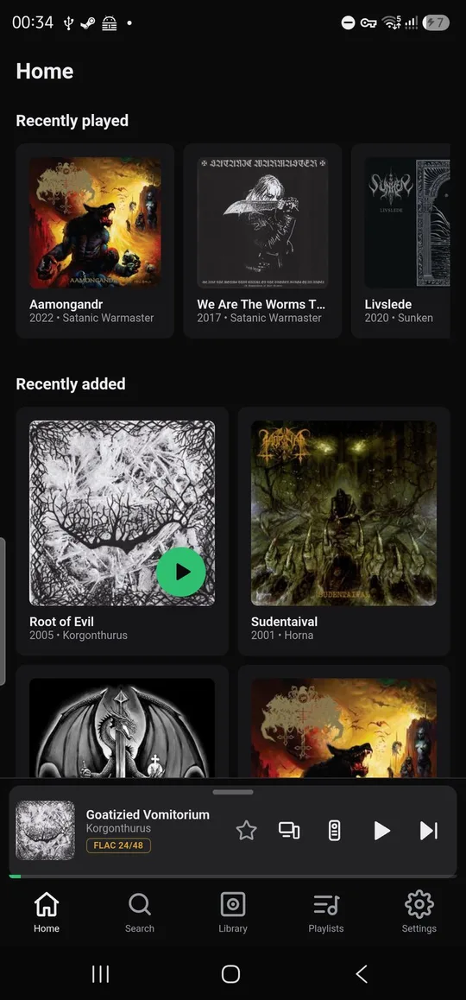
Contents
- Gerudo at a glance
- Move the music between devices
- Control any device from another
- One library on every device
- Link a new computer with the phone's camera
- Security, all of it
- Genre Radio
- Several Navidrome servers
- Hi-fi sound
- Spotify alongside your own music
- Backups and getting everything back
- Installing and updating
- Everyday details
- Coming later
- What's new
No chapter or section by that name. Try another word.
Gerudo at a glance
What Gerudo is made of, and which part does what. Everything else in this manual builds on this picture.
The idea in one minute
Most music players live on one device. Gerudo lives on all of them at once, and they work as a team:
- Your own music, untouched. Your files stay on a music server at home (Navidrome). Gerudo plays the original file, lossless stays lossless, and it shows you exactly what you are hearing.
- Spotify alongside it. One search, one queue and one playlist can hold songs from both. Spotify's own official apps do the Spotify playing; Gerudo tells them what to play.
- Devices that know about each other. Playlists, history and settings match everywhere. Each device sees what the others are playing, can control them, and can take the music over at the very same second.
- Yours. Every piece runs on your own hardware. Nothing plays through a web browser, and passwords never sit in a file.
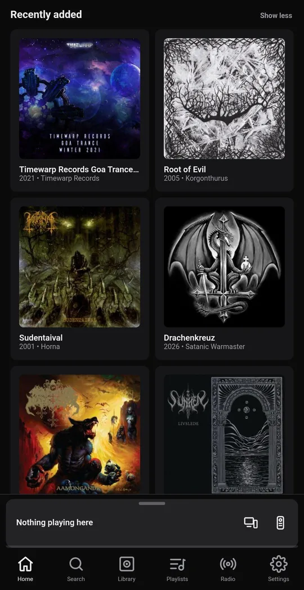

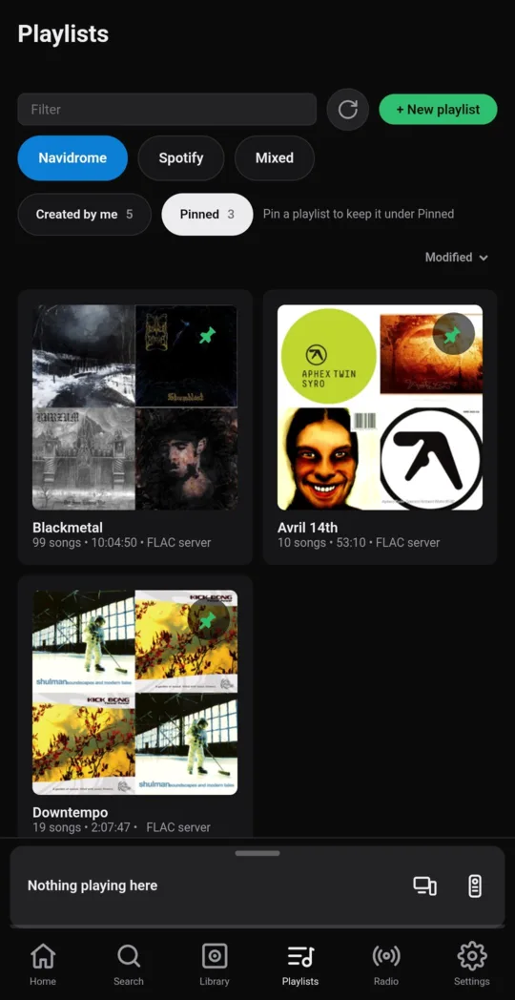

Think of a small company. Each colleague (a device) has a copy of the shared files (your playlists, history and settings) and can work on their own. An office coordinator (the Gerudo hub) keeps everyone's files up to date, puts calls through from one colleague to another, and hands a customer over from one desk to the next without the customer noticing. The goods themselves (the music) come straight from the company's own warehouse (Navidrome) or an outside supplier (Spotify), never across the coordinator's desk.
The map
Every part of Gerudo and what travels between them. Click a part (or tab to it and press Enter) to see what it does.
Tap the map to open it full screen: pinch or use + and − to zoom, drag to move, and tap a part.
Desktop
The Gerudo app on a Linux computer. It plays your own music through libmpv into the system's shared sound server (PipeWire), so other apps can play at the same time, and it can switch your DAC to each song's own sample rate (Hi-fi sound). Spotify songs play through Soloist, Spotify's official headless player, which Gerudo steers.
- music from Navidrome
- sync and control through the hub
- Spotify through Soloist
- media keys and the desktop's media widget
Phone
The same app on Android. Playback runs in a separate background service (Android's Media3), so music keeps going with the screen off or the app closed, and the lock screen and Bluetooth buttons work. Spotify songs play through the official Spotify app. Its camera links new computers (chapter 4).
- music from Navidrome
- sync and control through the hub
- Spotify through the Spotify app
- away from home: through Tailscale
Another computer
Any further Linux computer runs the same desktop app. You set it up by scanning a code on its screen with the phone: it receives your music servers and their passwords, sealed so only it can open them, and gets its own key for the hub (chapter 4). From then on it's a full member: it plays from Navidrome, syncs, and can take over or control the music.
- sync and control through the hub
- music from Navidrome (like the desktop)
Navidrome servers
A free music server you run yourself; it holds your music files. Gerudo speaks its OpenSubsonic interface and plays each song's original file, with no conversion. You can use several at once, for example one with lossless files and one with MP3s (chapter 7). Each device streams straight from Navidrome: the music never passes through the hub.
- streams to every device
- its data is in the hub's nightly backup
Gerudo hub
A small service written in Rust that runs in Docker on a Raspberry Pi at home. It's the company's office coordinator:
- Keeps devices in step: stores what's shared (playlists, history, radios, genre edits and more) and tells every device when something changed (chapter 3).
- Passes messages: what each device is playing, remote-control commands and handoffs (chapters 1 and 2).
- Holds the Spotify sign-in and hands devices short-lived access tokens.
- Asks Last.fm for genre tags once, for all devices (chapter 6).
- Backs everything up every night, encrypted (chapter 10), and serves the installers and updates (chapter 11).
Every device keeps its own copy and works without it; if the hub is down, changes wait and go when it's back.
Tailscale
A private network between your own devices, built on WireGuard encryption. At home the phone reaches the hub and Navidrome directly; away from home it goes through Tailscale, as if it were still on the home network, without opening anything to the internet (chapter 5). Each server can have a home address and an away address, and Gerudo picks the one that answers.
- the phone, away from home
- reaches the hub and Navidrome
Spotify
The second music source. Gerudo searches and browses Spotify with its Web API, and Spotify's own official apps do the playing: Soloist on the desktop, the Spotify app on the phone. Spotify never streams through Gerudo itself, and nothing plays in a web browser (chapter 9).
- sign-in kept by the hub
- search and browsing from each device
- playback in Spotify's apps
Last.fm
A music service whose listeners tag artists and albums with genres. When your files don't say which genre something is, Genre Radio uses these tags. Only the hub asks Last.fm, and it remembers the answers, so your devices don't each ask again (chapter 6).
- genre tags, through the hub
Backup places
Every night the hub packs itself and each Navidrome on the Pi into one archive, encrypts it to your own key, and stores it in a folder (for example on a NAS) and/or in Nextcloud. It keeps the last 7 days and one per month for a year (chapter 10).
- from the hub, nightly
- encrypted before it leaves the Pi
The hardware, and what runs on it
The same system seen as boxes you can touch: each device, and the programs that live inside it. Click any part to see what it does and where its data is kept.
The same as the desktop; linked from the phone.
Gerudo on the desktop
The Gerudo player and the audio engine it plays your own music through. Open it to see both.
Spotify on the desktop
Spotify songs are played by Soloist, Spotify's official player without a screen, which Gerudo steers.
Secrets on the desktop
Passwords and keys live in the system keyring, never in a file.
Hardware on the desktop
What's plugged in and matters to Gerudo: a USB DAC, if you use one.
Gerudo on the phone
The Gerudo player you see, and the playback service behind it that keeps the music going. Open it to see both.
Spotify on the phone
Spotify songs are played by the official Spotify app, which Gerudo steers.
Secrets on the phone
Passwords and the hub key are encrypted by a key in the phone's secure hardware.
Hardware on the phone
The camera, used to link a new computer by scanning its code.
Gerudo on another computer
The same desktop app; open it for more.
Gerudo player on the desktop
The app you use (Tauri with a Svelte interface and a Rust core). It browses and searches your servers and Spotify, keeps its own copy of everything shared through the hub, and plays your own music itself.
Data: its own copy of synced things, caches (covers, song lists), device-only settings.
The audio engine
libmpv plays each song's original file into PipeWire, the desktop's shared sound system, so other apps can play at the same time. With Hi-fi mode, PipeWire switches to each song's own sample rate (chapter 8).
Soloist
Spotify's official headless player. Gerudo steers it over a local connection when a Spotify song comes up; Spotify never streams through Gerudo itself (chapter 9).
Its key lives in the desktop's keyring and never leaves the desktop.
The system keyring
KWallet or GNOME Keyring: where the desktop keeps your Navidrome passwords, its hub key and the Soloist key, protected by your login. No password ever sits in a file (chapter 5).
USB DAC
Optional: a digital-to-analogue converter for your headphones or speakers. Gerudo can switch it to each song's own sample rate and shows when a song reaches it bit-perfect (chapter 8).
Gerudo player on the phone
The same app on Android, with a touch layout. The screen you see only mirrors the playback service, which does the playing.
Data: its own copy of synced things, caches, device-only settings.
The playback service
A separate background service (Android's Media3) that owns the queue: music keeps playing with the screen off or the app closed, and the lock screen and Bluetooth buttons work. It also listens for the hub, so a locked phone can be controlled and handed the music (chapters 1 and 2).
The Spotify app
Spotify's own app plays Spotify songs on the phone; Gerudo tells it what to play through Spotify's App Remote.
Android Keystore
A key held in the phone's secure hardware encrypts the Navidrome passwords (AES-256-GCM) and the hub key. The key can't be copied off the phone.
The camera
Scans the QR code on a new computer's screen to link it (chapter 4).
Another computer
Any further Linux computer runs the same desktop app. Linking it from the phone gives it your servers and its own hub key; installing and updating come from the hub (chapter 11).
Your network
At home, every device reaches the Pi over the home network. Away from home, Tailscale (built on WireGuard encryption) joins your devices into one private network, as if they were still at home. Nothing on the Pi is opened to the internet.
Docker
Docker runs each server program in its own container: a sealed box with exactly what that program needs. Each container sees only the folders it's given (the hub, for instance, may read Navidrome's data to back it up), each can be updated or restarted on its own, and the same setup runs on any Linux machine with Docker, not only a Raspberry Pi. Open a container to see its parts.
The Gerudo hub container
Gerudo's own server: one small Rust program that keeps your devices in step, passes messages between them, holds the Spotify sign-in, asks Last.fm, makes the nightly backups and serves the installers. Open it to see each part.
Data: one database file, backed up every night.
Navidrome 1
Your main music server, here the one with lossless files. It indexes the music folder it's given and streams the original files to every device.
Data: its database and artwork, backed up every night; the music files themselves are not.
Navidrome 2
Optional: a second music server, for example with MP3s of music you don't have lossless. Gerudo uses both at once and shows an album you have on both once, with a tab per version (chapter 7).
Out of the Pi
- Down to the NAS and Nextcloud: the nightly backup, already encrypted before it leaves the Pi. Nothing comes back unless you restore.
- Both ways with the internet: the hub renews the Spotify sign-in and asks Last.fm for genre tags. Your devices also talk to Spotify directly, to search and to play.
- Never online: the backup key's private half stays with you.
The hub: sync and live relay
A small Rust program, one Docker container. It keeps every device in step and passes messages between them: what each one plays, remote-control commands and handoffs (chapters 3, 1 and 2). Every request needs a device key.
The hub's database
One SQLite file with everything shared: mixed playlists, History, radios, genre edits, pins, exclusions, the device keys (as hashes) and the backup settings.
Backed up every night.
Spotify sign-in
Only the hub keeps Spotify's long-lived sign-in token; devices get short-lived access tokens from it.
Last.fm tags
The hub asks Last.fm for each artist's and album's genre tags once, keeps them and refreshes them after 30 days, for every device (chapter 6).
The nightly backup job
At 05:00 it packs the hub and each Navidrome on the Pi into one archive, encrypts it to your backup key and sends it to every destination (chapter 10).
The backup website
The hub's own page for backups: the last backup, Back up now, destinations, the key, the history and restore steps. Opened from Gerudo with a one-time link (chapter 10).
Installers and updates
The hub serves a signed package repository for Arch, Debian/Ubuntu and Fedora, a one-line install script, and the phone's app (chapter 11). These, and a health check, are the only things that answer without a device key.
Navidrome
A free music server, one Docker container per server. It indexes your music files and streams them, original and untouched, straight to each device. You can run one or several (chapter 7).
Navidrome's own data
Each Navidrome's database (stars, play counts, its playlists), settings, artwork and plugins.
Backed up every night with the hub.
Your music files
The FLAC and MP3 files themselves, which Navidrome reads. Gerudo never changes them.
Not in Gerudo's backup: they're large and belong in your normal file backup.
NAS: the backup folder
A share on a NAS, mounted on the Pi as a folder. The nightly backup is stored there, already encrypted; it keeps 7 days and one per month for a year.
Nextcloud
Optional second destination, reached over WebDAV. Copies arrive encrypted, so the cloud can't read them.
Spotify
The streaming service: devices search and browse it directly; its own apps do the playing.
Last.fm
A public catalogue of listeners' genre tags. Only the hub talks to it.
The backup key's private half
The only thing that can open a backup, kept by you (for example in your password manager), never on the Pi. The hub has only the public half, so it can lock backups but not open them.
Why a hub at all, and not devices talking directly?
Phones sleep, change networks and sit behind routers that don't accept incoming connections. Instead of each device trying to reach the others, every device keeps one connection open to the hub, which is always on. The hub can then pass on a command or a handoff at once, even to a locked phone, and keep a copy of everything shared, so a device that was off simply catches up. It also means no third party (such as Google's push service) is involved.
What happens when something is down?
- The hub is down: your music keeps playing, each device works on its own copy, and changes wait in an outbox until the hub is back.
- The network drops: music already downloaded keeps playing; if it runs dry, Gerudo waits and continues from the same spot when the network returns.
- Navidrome is down: its songs can't stream, but Spotify songs and everything else keep working.
Move the music between devices
Take the queue, the song and the exact second from the computer to the phone and back, even to a phone that's locked in your pocket.
Like a colleague handing a customer to the next desk: the first colleague passes on the whole file (what was ordered, where they got to, what comes next), steps back, and the next one carries on mid-sentence. Gerudo's handoff passes the queue, the song, the position to the second, and the settings along, then the old device goes quiet.
Try it
- Next: Low Tide
- Fog Signal
- Night Ferry
- Shuffle off · Repeat all
- You press Play here on the phone; it asks the hub for the desktop's music.
- The hub passes the request on at once, over the connection the desktop keeps open.
- The desktop answers with its queue in play order, the song, the position, shuffle, repeat and where the music was started from.
- The desktop stops and empties its queue: the music has moved, nothing is left paused there.
- The phone starts the song at that second; the rest of the queue follows.
Using it
- From the device you want the music on: the other device's Playing on … line shows what it plays; press Play here. The device picker in the player bar (and the phone's full player) has the same button.
- From the device that's playing: pick the other device and choose Play on phone (or the computer's name).
- What travels: the whole queue in play order, the song and its position, shuffle and repeat, and the "Playing from" link back to the album, playlist or radio. A running Genre Radio moves too and goes on making its batches on the new device.
You should hear the song continue within about two seconds, at the spot where it was.

A locked phone, Spotify songs, and a device that doesn't answer
- A locked phone takes the music too. The phone's playback service listens for the hub by itself while it plays, for 10 minutes after it stops, and for 10 minutes after Gerudo was opened, so the screen can stay off. Settings → Devices → Always reachable keeps it listening around the clock.
- Spotify songs move as well, in about five seconds. Spotify allows one stream per account, so the new device first takes the stream over and then seeks to the right second.
- The other device is off or out of reach: Play here still works. It starts from the last thing that device reported (song, position moved on by the time that has passed, the songs after it) and says that it did.
- One player at a time: starting music on one device pauses any other that plays, even from a lock screen or a Bluetooth button. If two played while out of touch, the one that started last keeps playing when they meet again.
Under the hood: why it's quick and why nothing gets lost
The device that gives the music away answers with what it's playing at that very moment, not with what it last reported, so the position is exact (a few hundred milliseconds at most, depending on the player). It only stops once its answer is on the way. In hand tests a song moved from the computer to a locked phone with under two seconds of silence.
The hub keeps no player state: it passes the request and the answer along and forgets them. Both live only in memory.
Control any device from another
Use the phone as a remote for the computer, or the computer for the phone: play, pause, skip, seek, volume and its whole queue.
An internal phone call through the office switchboard. You don't need the other colleague's direct number or to walk over: you call the switchboard (the hub), it puts you through to the right desk, the colleague does it and tells you how it went, all in a fraction of a second.
Try it: one tap's journey
- The phone sends the command to the hub. phone → hub
- The hub puts it through to the desktop at once. hub → desktop
- The desktop does it, and only then answers with what it plays now. on the desktop
- The phone shows the desktop's new state. ≈ 40 ms in all
Using it
- Connect to a device: the device picker in the player bar (on the phone, in the full player). A green Controlling Desktop line shows you're steering the other device, with a way back.
- What you can do there: play, pause, next, previous, seek, volume (the phone's media volume), shuffle and repeat; and its whole queue: reorder, remove, play a song from it, add to it or play something next. Whatever you pick to play while controlling plays there.
- See what the other plays without controlling it: the Playing on … line shows its song, position and what's next.
You should see the other device's player react within a blink: about 40 ms from the phone to the computer, about 100 ms to a locked phone, in measured tests.
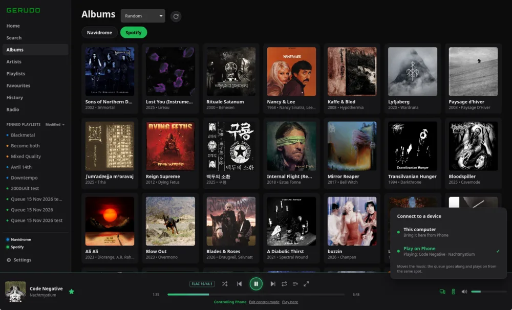
When is a device reachable?
- The computer: whenever Gerudo runs; it keeps a live connection to the hub.
- The phone: while it plays, for 10 minutes after it stops and for 10 minutes after Gerudo was opened. With Settings → Devices → Always reachable it listens all the time, at some cost in battery.
- Out of reach: you're told at once, not after a long wait; a device that doesn't answer within five seconds counts as not answering.
Under the hood: a live line and a "long poll"
The computer keeps one WebSocket connection open to the hub and gets commands down it instantly. A sleeping phone can't keep a socket alive cheaply, so its playback service uses a long poll: it asks the hub "anything for me?" and the hub holds the question open for up to 25 seconds, answering the moment a command arrives; then the phone asks again. That keeps a locked phone reachable within a tenth of a second without Google's push service or any other outside party.
What each device is playing (its "presence") is reported to the hub and passed to the others; the hub keeps it in memory only, and devices report again within 30 seconds after a hub restart.
Only player commands exist. Another device can't read your files, change your settings or do anything but steer the music, and only your own devices, each with its own key, can send them (chapter 5).
One library on every device
Playlists, history, radios and your choices match everywhere, and a day offline loses nothing.
Every colleague keeps their own copy of the shared files and writes changes into it straight away. Each change also goes into an out-tray for the office coordinator, who numbers it, files it and sends a copy to everyone else. If a colleague is out of the office, the out-tray simply fills up and is delivered, in order, when they're back.
Try it: offline and back
- No changes yet
- Nothing waiting
- Nothing new
Each change is numbered by the hub in the order it arrives. A device that was away asks for "everything after number 41" and catches up in one go.
What stays in step
| What | Kept |
|---|---|
| Mixed playlists (songs from any server and Spotify) | All, up to 10,000 songs each, stored by the hub |
| Navidrome and Spotify playlists | Live in Navidrome or Spotify; the hub tells other devices when one changed, so they refresh it |
| History: every song you listened to | The last 500, from all devices |
| Recently played albums, playlists and radios | The latest 200 plays; the last 10 radios |
| Pinned playlists, ignored songs | All |
| Recent searches | The last 8 searches and 20 opened results |
| Genre Radio: your own genres, renamed or hidden genres, album and artist corrections, combined radios, what's left out | All |
| Random picks: albums and artists left out | All |
Stars, play counts and Navidrome playlists are stored on Navidrome itself, and Spotify's on Spotify, so every device sees them there.
Offline, and an old hub
- Changes never wait for the network to happen. Your device shows them at once. Stars and edits to Navidrome or Spotify playlists made offline are kept in an outbox and sent when the network is back; a small clock marks what's waiting.
- "N waiting": a chip lists everything still waiting, with why (no network, or the hub is away).
- A hub older than the app: a change of a kind the hub doesn't know yet isn't thrown away; it waits until the hub is updated, and Gerudo tells you so.
Under the hood: why device clocks don't matter
Every shared item is a record with a key (say, a pinned playlist) and a body. When two devices change the same record, the change that reaches the hub last wins: the hub gives every change the next sequence number, and devices apply changes in that order. Phone clocks and computer clocks can disagree by minutes without any effect.
Deletions are kept as markers for 90 days so a device that was away for weeks still learns that something was removed. If the hub is ever replaced, devices notice (each hub has its own id) and start over from the new hub's copy.
Link a new computer with the phone's camera
Scan one code and a new computer has your music servers, their passwords and its own hub key, sealed so that nobody in between, not even the hub, can read them.
The new computer hands out an open padlock (shown in the QR code) and keeps the only key to it. The phone puts your server details in a box, snaps the computer's padlock shut on it, and gives the box to the hub to deliver. The hub carries a locked box it has no key for; only the computer can open it.
Linking, step by step
On the new computer, choose "Link from your phone"
A fresh install opens on Welcome. It shows a QR code and a six-digit code.
On the phone, scan the code
Settings → Devices → Link a computer, and point the camera at the QR code.
Compare the six digits, then approve
Check that both screens show the same six digits, tap Link, and unlock the phone with your fingerprint or PIN.
You should see the computer set itself up: your servers, Spotify, sync and handoff all work.
Only Spotify's Soloist key is typed on the computer itself; the phone never has it.
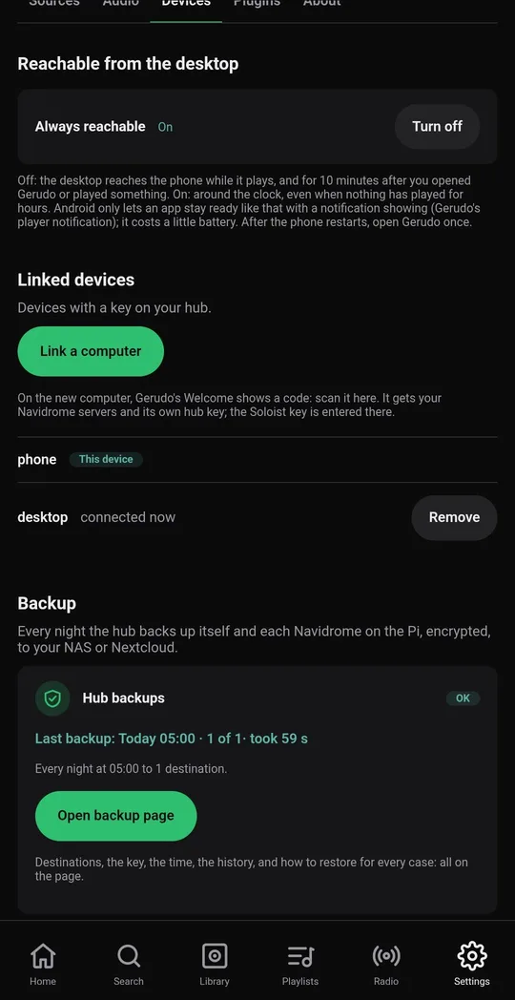
What happens inside
A one-time key pair
The computer makes a fresh key pair for this link only. The private half stays in its memory and is never written anywhere.
The hub seesnothing yet"Link me"
The computer tells the hub its name and the public half of the key. The hub answers with a link id and a collect token; the token never leaves the computer.
The hub seesa name, a public key (32 bytes, safe to show anyone), the link idThe QR code and six digits
The QR code holds only the link id and the public key: no hub address, no secret. The six digits are worked out from both, so the phone can show the same.
The hub seesnothing: this happens on the screenThe phone scans and checks
The phone asks its own hub what's waiting under that link id and checks that the public key there is the one in the QR code. A swapped key, and it sends nothing.
The hub seesthe phone's question, signed with the phone's own device keyYou approve
The six digits match, you tap Link and unlock the phone. Nothing happens without that.
The hub seesnothingSealing
The phone seals your servers and their passwords to the computer's public key, tied to this link id.
The hub seesnothing yetApproved, with the sealed box
The phone sends its approval and the sealed bytes. The hub makes the computer's own device key.
The hub sees01 9f3a…c2 7b0e… (sealed bytes it can't open)Collect, open, forget
The computer collects its device key and the sealed box with its collect token. The hub then forgets both. The computer opens the box with its private key and puts everything in the system keyring.
The hub seesthe collect token (only the computer has it), then deletes the link
The encryption, and why it was chosen
The box is sealed with three well-known building blocks, used together the way modern secure messengers do:
| Building block | What it does here | Why this one |
|---|---|---|
| X25519 | The phone makes its own one-time key pair; combined with the computer's public key, both sides arrive at the same shared secret without ever sending it. | Keys are only 32 bytes, so one fits in a QR code with room to spare; fast on any phone; widely reviewed; no certificates or authorities needed. |
| HKDF-SHA256 | Turns the shared secret into the actual encryption key, salted with both public keys. | The standard way to turn a key exchange into a clean key; the salt ties the key to exactly these two keys. |
| ChaCha20-Poly1305 | Encrypts the bundle and adds a seal that breaks if a single bit changes. The link id is bound in as "associated data". | Authenticated: tampering is detected, not just hidden. Fast in software on phones without special chips. Binding the link id means a box can't be replayed onto another link. |
The finer points
- The six digits are the first digits of a SHA-256 fingerprint of the computer's public key and the link id: a quick human check that the phone is linking the computer in front of you.
- A photo of the QR code isn't enough to steal anything: it contains no secret, the device key is only handed out with the collect token that never leaves the computer, and nothing happens without your unlocked phone.
- Short-lived and limited: a link expires after 5 minutes and is deleted once collected or refused; at most 3 links wait at a time, and at most 10 can be started per 10 minutes.
- Who may approve: only your first devices (made on the hub itself) may link others; a linked computer can't, unless you allow it.
- The sealed bytes are: a version byte, the phone's one-time public key, a 12-byte nonce, then the ciphertext and its 16-byte seal.
Settings → Devices → Remove (on the phone, or a computer that may link) revokes a device's key at once. A lost phone is removed on the hub; a thief would also need to unlock it first.
Security, all of it
Which keys exist, where every password lives, what travels over the network and what never leaves a device.
- Secrets live only in the system's secret store, never in a file.
- Every device has its own key, so one can be revoked without touching the others.
- Only a health check and the installers answer without a device key, and the hub is reached only inside your private network.
- Only official clients play Spotify, and nothing plays in a web browser.
Who holds what
| Secret | Where it lives | What travels |
|---|---|---|
| Navidrome passwords | Desktop: the system keyring (KWallet or GNOME Keyring). Phone: encrypted with AES-256-GCM by a key in the Android Keystore, which on most phones sits in secure hardware and can't be copied out. | Never the password: each request carries a one-time token made from it and a fresh random salt (Subsonic's token login). |
| Hub device keys | Each device's own secret store. The hub keeps only a SHA-256 hash of each. | Sent with every request to the hub, inside the private network. |
| Spotify sign-in | Only the hub keeps the long-lived refresh token. | Devices get short-lived access tokens and keep them in memory only. |
| Soloist key (desktop Spotify) | The desktop's keyring. | Never: it isn't synced, linked or backed up. |
| Backup key | The hub has only the public half; the private half is yours, offline. | Backups leave the Pi already encrypted. |
On the network
- The hub is reached only over your private network (at home, or through Tailscale when away). Every request needs a device key; only the health check, the package repository, its install script and the phone's installer are public, by design.
- Tailscale joins your devices with WireGuard encryption, so the phone reaches home from anywhere without anything being opened on your router.
- Commands between devices go only through the hub, from your own devices, and only player commands exist (chapter 2).
- The app's screens never see credentials. The interface asks the app's core for data and gets plain song information back; covers are fetched by the core and passed to the screen through a private channel, so no signed address ever reaches it.
- Logs and error messages have every token stripped out before they're written or shown; a test checks it.
Why each choice
- The system secret store rather than an encrypted file: the operating system already protects it with your login (and on the phone with hardware), and Gerudo doesn't have to invent its own key management.
- One key per device rather than one shared password: a lost phone is removed on its own, and the hub can tell devices apart (whose change, whose command).
- Hashes on the hub: even someone with a copy of the hub's database can't use the keys in it.
- Spotify with PKCE (a sign-in method made for apps): no client secret exists anywhere, and the long-lived token stays in one place.
- No librespot and no browser playback: only Spotify's own clients play Spotify, which keeps Gerudo within Spotify's rules and the account safe.
- The phone's app data can't be backed up off the phone by backup tools, so the encrypted password stays on that phone.
Navidrome is often reached over plain HTTP. That's fine at home and through Tailscale (which encrypts the traffic itself), but don't point Gerudo at a server over plain HTTP across the open internet: use HTTPS there.
Genre Radio
Endless music from any genre or subgenre of your own collection: Metal, or Metal → Black, or Metal → Black → Atmospheric, sorted by Gerudo's own genre tree, with Last.fm first and your files' tags where Last.fm knows nothing.
Think of the company's filing system. Every record that arrives (an album) is filed in a drawer of a fixed cabinet (Gerudo's genre tree). The clerk first looks the record up in a big public catalogue (Last.fm): its own entry, or else the artist's. Only when the catalogue says nothing does the clerk go by the label on the record (your files' genre tags), and the label still picks the folder inside the drawer. If you ever move a record yourself, your note wins from then on. Genre Radio simply pulls random records from the drawer you choose.
Gerudo's genre tree
Instead of the thousands of spellings that tags come in, Gerudo sorts everything into one tree of its own: 13 main genres and 136 genres in all, down to three levels (for example Metal → Black → Atmospheric). Open a genre to see what's inside:
Metal41
- Black
- Atmospheric
- Depressive
- Raw
- Melodic
- Symphonic
- Avant-garde
- Post-black
- Industrial
- Black 'n' roll
- Death
- Melodic
- Brutal
- Technical
- Progressive
- Old-school
- Blackened
- Deathgrind
- Doom
- Funeral
- Death-doom
- Drone
- Gothic doom
- Heavy
- NWOBHM
- Power
- Speed
- Thrash
- Grindcore
- Goregrind
- Progressive
- Folk / Viking / Pagan
- Gothic
- Symphonic
- Industrial
- Nu / Alternative
- Metalcore
- Groove
- Sludge / Stoner
- Post-metal
- Avant-garde
Rock23
- Classic / Rock & roll
- Hard rock
- Psychedelic
- Space rock
- Stoner rock
- Progressive
- Alternative / Indie
- Grunge
- Britpop
- Shoegaze
- Math rock
- Post-rock
- Noise rock
- Gothic rock
- Darkwave
- Post-punk / New wave
- Folk rock
- Depressive rock
- Instrumental rock
- Blues rock
- J-rock
- Pop rock
- Experimental
Punk & Hardcore7
- Punk rock
- Horror punk
- Hardcore punk
- Post-hardcore
- Screamo / Emo
- Crossover
- Pop punk
Electronic19
- Ambient
- Dark ambient
- Drone
- IDM
- Techno
- Hardcore techno
- Happy hardcore
- House
- Trance
- Psytrance
- Goa
- Dubstep / Bass
- Synthpop
- Industrial
- Trip hop / Downtempo
- Chiptune
- Noise
- Dance / EDM
- Experimental electronic
Hip-Hop4
- Rap
- East coast
- Underground / Alternative
- Zef
Pop4
- Indie pop
- Dream pop
- K-pop
- R&B / Soul / Funk
Jazz4
- Vocal jazz
- Swing
- Acid jazz
- Jazz rock
Blues0
Folk & Country8
- Folk
- Acid folk
- Neofolk
- Nordic folk
- Celtic
- Atmospheric folk
- Singer-songwriter
- Country
Reggae3
- Roots
- Dub
- Ska
Classical7
- Baroque
- Romantic
- Contemporary
- Chamber
- Concerto
- Neoclassical
- Opera
Soundtrack3
- Film score
- Video game
- Trailer music
World0
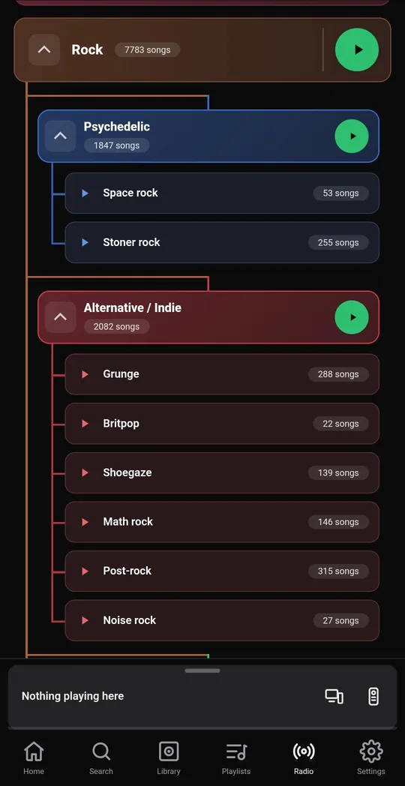
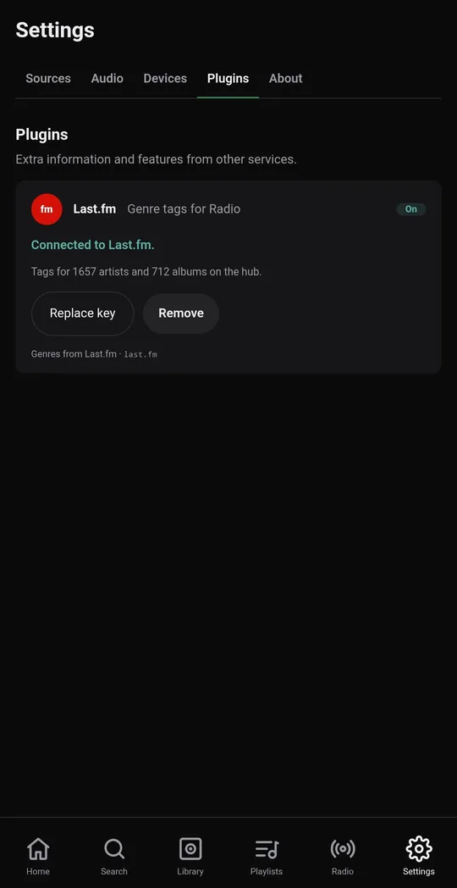
Spellings are matched forgivingly: "Hip-Hop" is "hip hop", "R&B" is "r and b", and glued tags like Black Metal|Doom Metal are split. Words that aren't genres ("favourites", "seen live", "80s", nationalities) are ignored.
How a song gets its genre
- Last.fm: the albumTagged hardcore punk: Punk & Hardcore → Hardcore punk
- Last.fm: the artistNot needed: the album's tags decided.
- Your tagsHardcore Techno points to Electronic, a different main genre from Last.fm's, so it's left out.
- Your correctionsNone.
- Last.fm: the albumTagged metal: Metal
- Last.fm: the artistNot needed.
- Your tagsAtmospheric Black Metal lies inside Last.fm's Metal, so it adds the detail: Metal → Black → Atmospheric
- Your correctionsNone.
- Last.fm: the albumOnly tags that aren't genres (2014 favourite albums).
- Last.fm: the artistTagged post-rock: Rock → Alternative / Indie → Post-rock
- Your tagsNone.
- Your correctionsNone.
- Last.fm: the albumUnknown to Last.fm.
- Last.fm: the artistUnknown too.
- Your tagsBlack Metal|Doom Metal is split into two, and both are in the tree: Metal → BlackMetal → Doom
- Your correctionsNone.
- Last.fm: the albumTagged phonk: a real style, but not one the tree has.
- Suggested genresThirty of your albums share the tag, so the Radio page suggests it: Phonk · 30 albums · Last.fm suggests under Electronic. Add… makes it your own genre, and every album tagged phonk goes there, also ones added later: Electronic → Phonk
- Last.fm: the albumTagged shoegaze: Rock → Alternative / Indie → Shoegaze
- Last.fm: the artistNot needed.
- Your tagsNot needed.
- Your correctionsYou chose Radio genre… → Also add to your own genre "Late nights". It stays where it was and is in yours too: Rock → Alternative / Indie → ShoegazeLate nights
Playing a radio
- Start one: Radio in the sidebar (a tab on the phone), then any genre or subgenre.
- 50 songs at a time: random, a few per artist, none played earlier in this radio (and none played recently, while there's enough else). When the newest batch starts, 50 more are added, so hours of music are always queued. Adding songs can be switched off in the radio's bar.
- Which servers: chosen on the Radio page under Servers in Radio.
- On another device: a radio runs on the device playing it; Play here moves it, same song and moment, and the new device carries on making batches.
- History → Radio: the last 10 radios with every song each queued: Continue, Play from start or Save as playlist.
You should hear a song from the genre at once, and the queue should never run dry.
Make it yours
- Correct an album or an artist: Radio genre… in an album's ⋯ menu or on an artist's page. The first step shows why it's where it is now (Last.fm's album tags, its artist tags or your files' tags). Choose what (this album, or everything by the artist, later albums too), where (any genre, or a new one) and how (Move to or Also add to). One correction covers the same album on every server.
- Your own genres: create, rename, move or delete them; rename or hide Gerudo's own. Your genres get music from your corrections, and from their spellings: one made from a suggested tag (or a tag on the Without a genre list) takes every album with that tag, also ones added later.
- Suggested genres: the Radio page lists Last.fm tags that at least 5 of your albums share but the tree doesn't have, each with a suggested place. Add… or Not a genre; nothing changes until you choose.
- Combined radios: one radio over several genres, for example Black without Raw, plus Doom. Tick genres in the tree (a ticked genre brings everything below it; untick a subgenre to leave just that out), and the dialog counts the songs.
- Leave things out: a song, an album (just one version if you like) or an artist can be kept out of Radio. They're listed under Left out of Radio, each with Undo.
- Without a genre: albums Radio can't place yet, fixed one at a time or several at once.
- Everywhere at once: all of this is kept on the hub, so every device sorts the same way, and it's in the nightly backup. Nothing is written to your files or to Navidrome.
Under the hood: Last.fm, new music and new tags
- Last.fm is optional. You give a free Last.fm key once (Settings → Plugins); it goes to the hub and is never shown again. The hub looks up every album and artist of your library in the background, keeps the tags and refreshes them after 30 days. It goes slowly on purpose, so Last.fm never blocks the key: one lookup a second, at most 3 000 a day, and a pause whenever Last.fm asks it to slow down. Its to-do list survives a hub restart, and Settings → Plugins → Last.fm shows how far it has come. Without a key, genres come from your own tags only.
- New music sorts itself: when Navidrome has scanned new files, Gerudo notices the next time Radio needs its genres and sorts again, asking Last.fm only about what's new.
- Context counts: a tag like "hardcore" follows Last.fm's strongest tags: hardcore techno when electronic tags lead, hardcore punk otherwise.
- Gerudo never writes tags. To change a genre everywhere (in other players too), retag the files; to change it only in Gerudo, use a correction.
Several Navidrome servers
A lossless server and an MP3 server used as one library: an album you have on both shows once, with a tab per version.
A company with two warehouses. The catalogue lists each product once, and when both warehouses stock it, the product page shows both: "available as the deluxe edition from the main warehouse, or the standard edition from the other". Gerudo does the same with albums across your servers.
Try it
Using several servers
- Add one: Settings → Sources → + Add server. The first server is the main one; later ones are extensions, and adding one doesn't switch over to it.
- Main server: new playlists go there by default, and it's listed first. Make main swaps roles.
- Where each one shows: three switches per server: Search, Albums (also Home's rows and Favourites) and Artists. Switched off only means not listed: its songs still play from the queue, History and playlists.
- Search has a group per server.
- Playlists belong to one server. Adding a song from elsewhere offers to make the playlist mixed (kept on the hub, songs from anywhere).
You should see one card per album, and version tabs on the album page when you have it twice.
Under the hood: matching albums, and how devices agree on a server
- Albums match by artist and name, ignoring case, punctuation and edition notes such as "(Remastered)". Albums named differently show twice, told apart by their quality badges.
- A server is known by a key made from its address, not its name, so the phone and the computer recognise the same server even if you call it something different on each. Editing an address keeps the old key.
- Each server's own library check (Settings → Sources → open a server → Library check) looks only inside that server: copies on your other servers are your deliberate versions, not duplicates (chapter 12).
Hi-fi sound
Each song reaches your DAC at its own sample rate, bit-perfect when it can be, and Gerudo always shows what you're actually hearing.
Normally a computer's sound system runs everything at one speed (usually 48 kHz) and converts every song to it, like a shop that repackages every product into the same box. A 24-bit/192 kHz file gets squeezed to 48 kHz on the way. Hi-fi mode tells the sound system to switch to each song's own rate while Gerudo plays, so the song reaches the DAC in its original box.
How good is this file?
Lossless files start at 85 (CD quality, 16-bit/44.1 kHz) and reach 100 at 24-bit/192 kHz. MP3 runs from 15 at 64 kbps to 75 at 320 kbps; AAC, Opus and Ogg sound like MP3 at about 1.3 times their bitrate, so they score a little higher, but lossy files stay below 80. The score is for the file Gerudo gets; the panel shows separately what reaches your output.
On the desktop
Settings → Audio → Hi-fi mode → Turn on. Nothing in the system's configuration changes: Gerudo sets the sound server's (PipeWire's) rate while it plays and gives it back afterwards.
- Test DAC: plays silence and switches through every rate your DAC reports; each turns ✓ when it really switched. Hi-fi mode then uses only those.
- Bit-perfect indicator: ✓ Bit-perfect shows when the song reaches the DAC untouched, or what's in the way: Gerudo's volume or the system mixer below 100 %, another app making sound, a bit depth the DAC can't take.
- Spotify: plays at 44.1 kHz, the rate Soloist delivers; with Premium it's lossless and judged like your own files.
You should see the quality panel's output line match the file's rate, for example 96 kHz in and 96 kHz out.
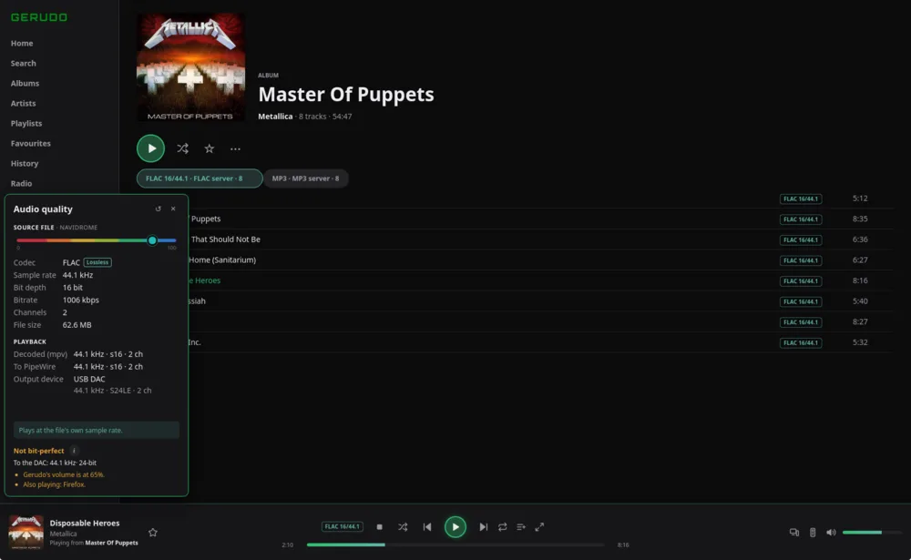

The volume slider
The slider moves in straight lines through three points: −50 dB at 1 %, −30 dB at 21 % and 0 dB at 100 %. In the bottom fifth each step is one decibel, and ten steps (1 % to 11 %) sound twice as loud, so quiet listening is easy to set. At 100 % Gerudo leaves the samples alone, which is what keeps Hi-fi mode bit-perfect: set the loudness on your DAC or amplifier instead.
On the phone
Settings → Audio → Playback has three modes; a change applies from the next song.
- Android default: every file is handed to Android as 16-bit, so a 24-bit file loses its quietest detail. Works on every phone.
- Hi-fi mode: 24-bit files reach Android with all their bits. Gerudo checks the way to your ears: it warns when Bluetooth headphones run at 48 kHz although they could do more (for example Samsung's UHQ audio option allows up to 96 kHz), and that the phone's speaker takes 48 kHz at most.
- Bit-perfect to a USB DAC: planned, see Coming later.
The Output card and the quality panel show where the sound goes (speaker, Bluetooth headphones by name, USB, wired), at which rate, and whether Android resamples it.

- Bluetooth is never bit-perfect: the sound is always converted for the wireless link.
- A short silence (about 0.3–0.5 s) between songs at different rates on the desktop while the DAC switches; songs at the same rate play straight through.
- Other apps keep playing on the desktop, converted to the song's rate.
- The indicator reads settings, it doesn't measure what the DAC receives.
Spotify alongside your own music
One search, one queue and one playlist for your own music and Spotify, with Spotify's own apps doing the Spotify playing.
A shop that sells its own goods and a partner's. The partner's products are shown in the same catalogue and go in the same basket, but the partner ships them itself, its own way. Gerudo browses Spotify and puts its songs in your queue, and when one comes up, Spotify's official player plays it while Gerudo keeps the queue, the lock screen and the buttons working.
Who plays what
| Your own music | Spotify | |
|---|---|---|
| Desktop | Gerudo's own player (libmpv) | Soloist, Spotify's official headless player, steered by Gerudo |
| Phone | Gerudo's playback service (Media3) | The Spotify app, steered through Spotify's App Remote |
| Search, albums, playlists | Navidrome | Spotify's Web API |
What you can do
- One search: results grouped per source; Spotify is searched when you press Enter (your own library answers as you type).
- Browse Spotify: albums, artists, playlists and your liked songs.
- Mix them: one queue can hold songs from both; a mixed playlist on the hub can too, the same on every device.
- Spotify playlists: create, add to, remove from, rename and delete them like Navidrome ones.
- Quality: with Premium, Spotify streams lossless (FLAC), and the quality panel shows what it streams.
Why Spotify's own apps, and not a built-in player?
Unofficial players (such as librespot) and web players break Spotify's rules and can put an account at risk. Gerudo never plays Spotify through anything but Spotify's own clients, and never through a web browser. That's also why a Spotify song in Gerudo's queue is a stand-in: when it comes up, Gerudo hands it to Soloist or the Spotify app and follows along, so the queue, the lock screen and Bluetooth keep working across both sources.
Spotify allows one stream per account: when you move the music to another device, the new device takes the stream over first (chapter 1). The sign-in is kept by the hub, which hands devices short-lived tokens (chapter 5).
Backups and getting everything back
Every night the hub and your music servers are packed into one encrypted file and stored where you choose; if the Pi dies, you can put everything back.
The company's night shift copies every important file, puts the copies in a safe that only the owner can open, and sends the safe to two storage places. The night shift can lock the safe but has no key to open it: only the owner has that, kept somewhere else entirely.
What's in a backup
- The hub: mixed playlists, pins, History and radios, genre edits, the device keys, the Spotify and Last.fm sign-ins, the backup settings themselves, and the hub's own source code.
- Each Navidrome on the Pi: its database (from Navidrome's own nightly backup), its settings, its artwork and plugins.
- Not the music files: those are big and belong in your normal file backup.
- A
RESTORE.txtat the top: what's inside and how to put it back by hand with only standard tools, so a backup plus your key is enough, even years from now.
Every database must pass an integrity check before it goes in, so a damaged one is never backed up as if it were fine.
When, where and how many
- Every night at 05:00 (or Back up now), to every destination you set: a folder on the Pi (for example a NAS share) and/or Nextcloud or another WebDAV server. Each destination has its own result; one failing doesn't stop the others.
- Kept: the last 7 days, plus one a month for a year. Try it below.
The encryption, and why it was chosen
Each backup is encrypted with GPG to your own Gerudo Backups key before it leaves the Pi. The hub has only the public half: enough to lock a backup, never to open one. The private half lives with you (for example in your password manager), never on the Pi.
Why GPG and a key pair
- A stolen Pi or a hacked cloud account reveals nothing: the backups are unreadable without the private key, which is in neither place.
- No password to type at 05:00: public-key encryption needs no secret on the machine that encrypts, so the night shift can run unattended.
- A tool that will still exist: GPG is decades old and on every Linux system, so a backup can be opened by hand without Gerudo, even if everything else is gone.
The backup page
The hub has its own page for backups: the last backup and Back up now, what's backed up, the destinations (add, test, show copies, pause, remove), the key, the time, the history, and restore steps for each case. Open it from Gerudo: Settings → Devices → Backup → Open backup page. Gerudo asks the hub for a link that works once, for a minute; the browser then stays signed in for 12 hours.

Getting everything back
- The easy way: a restore script on the desktop (which holds the key) lists the backups, decrypts the one you pick and puts everything back, or just the hub, or just one Navidrome.
- Check it works without touching anything: the same script with
--checktries the newest backup. - By hand: follow the
RESTORE.txtinside the backup.
You should see your playlists, history, radios and devices exactly as they were the night of the backup.
Settings that belong to one device only (such as its Hi-fi mode setup or the order of a list on that screen) stay on that device. Everything shared through the hub is in the backup.
Installing and updating
Install Gerudo on another computer with one line, and update the phone from your own hub, with no app store involved.
A new computer
Install from your hub
On a computer that reaches the hub (home network or Tailscale), run:
curl -fsSL http://hub.example:8899/install | sh
(with your hub's name instead of hub.example). It shows the signing key's fingerprint to compare, adds Gerudo's package repository on the hub to your package manager, installs Gerudo, and checks for the keyring, the sound tools and Soloist. Works on Arch/CachyOS, Debian/Ubuntu and Fedora.
You should find Gerudo in the app launcher.
Link it from your phone
Gerudo opens on Welcome: Link from your phone and scan the code (chapter 4). Or set it up by hand.
Set up Soloist
Gerudo checks for Soloist, guides you through installing it and pairs with it. Its key is entered on that computer only.
- Updates come with your normal system update (pacman, apt or dnf). Every package is signed, and your package manager refuses one that isn't.
- Without the hub, Gerudo can also be installed from its release page or built from source.
The phone
- First install: open
http://hub.example:8899/androidin the phone's browser (your hub's name instead); the page offers the app. - Updates: Settings → About → Update. Gerudo asks your hub whether there's a newer version and installs it, signed with the same key as before (Android refuses anything else).
Why from the hub, and not an app store?
Gerudo is your own app, not a public one. Serving it from the hub keeps everything on your own hardware and network, with signatures that your package manager and Android check themselves. Only these installers, the package repository and a health check answer without a device key, by design.
Everyday details
The many smaller things: search that forgives typos, history, the big player, the library check and more.
Finding music
- Suggestions as you type, forgiving case, accents and a typo or two; Spotify is searched when you press Enter. "Did you mean …?" helps when a search finds nothing.
- Albums and artists A–Z with an index down the side, or Best quality order with quality badges.
- Filter an album's or a playlist's songs: ⋯ → Filter songs.
- Click the playing song (or a song's title in a list): its album or playlist opens at that song.
Listening
- The queue: play next, add, remove (swipe left on the phone), drag to reorder; shuffle makes a new order each round with Repeat all.
- The big player on the desktop: click the cover in the player bar for a large cover with the album and the queue beside it, the playing song in view, and text size − / +.
- "Playing from …" links back to the album, playlist or radio the music was started from, also after moving it to another device.
- Ignore a song: it's skipped when an album or playlist plays.
- Favourites, play counts and scrobbling to Navidrome.
- System controls: media keys, the desktop's media widget and a tray icon; on the phone the lock screen, the notification and Bluetooth buttons, playing on with the screen off.
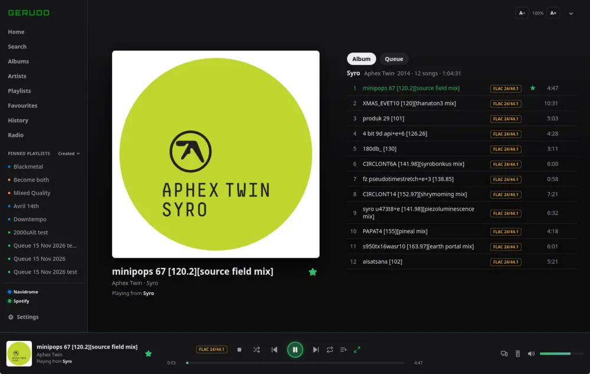
History and Home
- History: every song you listened to, the last 500 from all your devices, by day, counted by time actually listened; plus the albums, playlists and radios you played.
- Recently played on Home (every source; the playlist when you played from one) and pinned playlists in the sidebar.
- Random picks on Home: leave an album or an artist out (⋯ on the card; hold a finger on it on the phone). N left out › beside the row lists them all, each with Undo.
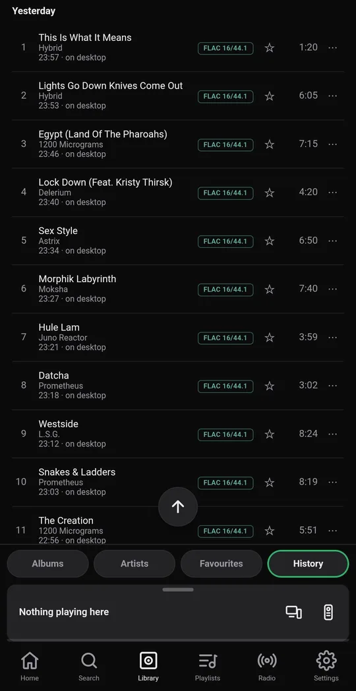
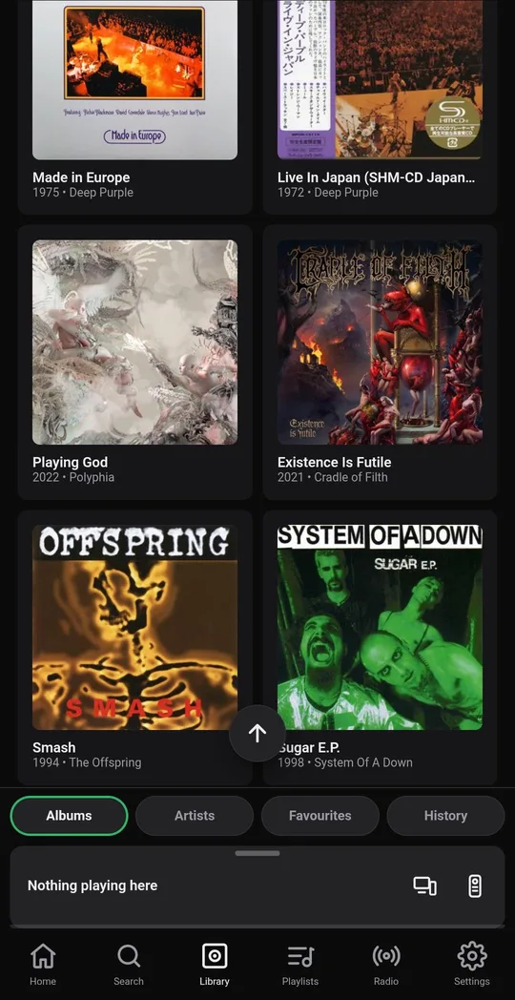
The library check
Settings → Sources → open a server → Library check: what looks wrong in that server's music, with how to fix each (Gerudo doesn't change your files; a tag editor does, then Quick Scan).
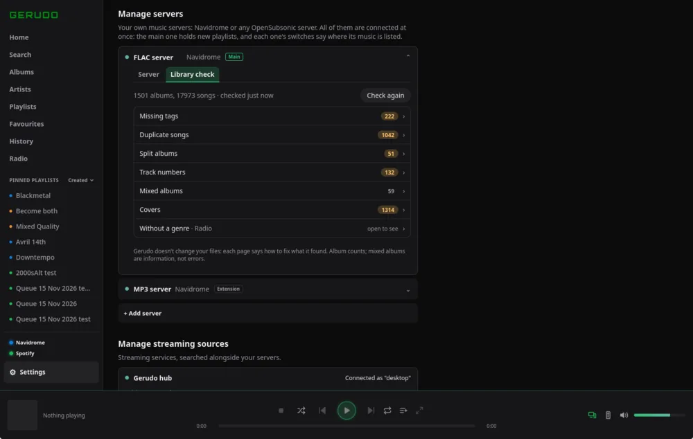
| Kind | Finds |
|---|---|
| Missing tags | No title (just the file name), no artist, no album, no track number, no year |
| Duplicate songs | The same artist and title within 3 seconds' length, more than once on that server; Live, Remix and similar versions aren't counted |
| Split albums | One album Navidrome shows as several, and which tag differs |
| Track numbers | Gaps, the same number twice, disc numbers on only some songs |
| Mixed albums | Songs of one album with different years, album artists or formats |
| Covers | Songs without a cover; Check cover sizes finds covers under 500 × 500 and albums with no real cover |
Offline and notices
- A lost connection: music already downloaded keeps playing; if it runs dry, Gerudo waits and carries on from the same spot when the network is back (up to 10 minutes).
- Waiting changes are marked with a small clock, and "N waiting" lists them with why (chapter 3).
- Quick Scan (Settings → Sources) asks Navidrome to look for new and changed files, and shows its progress even if you leave the page.
- Notices stay longer when there's more to read; a click, Back or Esc closes one.
- Home and away addresses: each server can have one of each (say, the home network and Tailscale), and Gerudo uses the one that answers.
Coming later
Ideas that are planned but not scheduled yet.
- Lyrics for the song playing.
- Listening statistics from your History.
- Bit-perfect on the phone: a file's exact samples to a USB DAC, past Android's mixer and volume. Needs research first.
- A small player without a screen for a stereo: a device you can hand music to, playing your own music, running on a home server.
- More sources and players: other music servers and home players as places to send the music.
What's new
Each release's new features, newest first.
0.19.0
- Genre Radio goes by Last.fm first: each album by Last.fm's genres for it (else for its artist), your files' tags where Last.fm knows nothing (chapter 6). One wrong tag in the files no longer pulls an album into the wrong genre.
- Your whole library on Last.fm: the hub looks up every album and artist in the background, slowly enough that Last.fm never blocks the key; Settings → Plugins → Last.fm shows how far it has come.
- Suggested genres: Last.fm tags many of your albums share become suggestions on the Radio page: Add… or Not a genre.
- Why it's there: Radio genre… shows where an album's genre came from; subgenres are listed by how many songs they have.
Earlier releases
- 0.18.0 (26 Nov 2026): the Library check with cover sizes; everything left out of Random picks in one list; the phone's card menu beside your finger; this manual.
- 0.17.0 (25 Nov 2026): combined radios; leaving songs, albums and artists out of Radio; the Without a genre page; waiting marks and "N waiting"; changes wait for an older hub; Quick Scan keeps its state; longer notices.
- 0.16.0 (25 Nov 2026): the Radio genre editor (your own genres, rename or hide Gerudo's, album and artist corrections); handing music to a locked phone made reliable.
- 0.15.0 (24 Nov 2026): the quality gauge and a movable quality panel; leaving albums and artists out of Random picks; stars and playlist edits wait offline; Radio's own server switches; playback resumes after a lost connection; the phone reachable after Gerudo is opened, and Always reachable.
- 0.14.0 (23 Nov 2026): phone updates from your hub.
- 0.13.0 (23 Nov 2026): nightly encrypted backups, the backup page and restoring.
- 0.12.0 (23 Nov 2026): Genre Radio; search suggestions; filtering songs; the controlled device's whole queue; the big player's text size; shuffle per round.
- 0.11.0 (21 Nov 2026): several Navidrome servers at once, with version tabs.
- 0.10.0 (20 Nov 2026): the big player; Quick Scan; the new volume curve.
- 0.9.0 (20 Nov 2026): song History; playlists in Recently played; "Playing from".
- 0.8.0 (19 Nov 2026): linking a computer from the phone.
- 0.7.0 (19 Nov 2026): installing on another computer from your hub.
- 0.6.0 (19 Nov 2026): Hi-fi mode on the phone.
- 0.5.0 (18 Nov 2026): Hi-fi mode on the desktop.
- 0.1–0.4 (November 2026): the Navidrome player on both devices, Spotify, one search, mixed playlists and sync, moving the music and remote control.